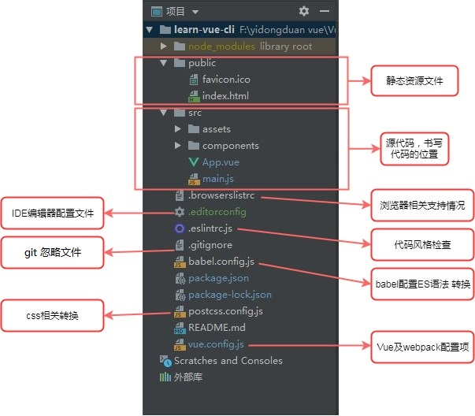

MVVM
MVVM基本
MVVM分为Model、View、ViewModel三部分。
- Model 代表数据模型，数据和业务逻辑都在Model层中定义
- View 代表UI视图，负责数据的展示
- ViewModel 负责监听 Model 中数据的改变并且控制视图的更新，处理用户交互操作
Model 和 View 并无直接关联，而是通过 ViewModel 来进行联系的，Model 和 ViewModel 之间有着双向数据绑定的联系。因此当 Model 中的数据改变时会触发 View 层的刷新，View 中由于用户交互操作而改变的数据也会在 Model 中同步。这种模式实现了 Model 和 View 的数据自动同步，因此开发者只需要专注对数据的维护操作即可，而不需要自己操作 dom。
mvvm和mvc的区别
mvc和mvvm其实区别不大。都是一种设计思想，主要mvc中controller演变成mvvm中的ViewModel。mvvm主要解决了mvc中大量的DOM操作使页面渲染性能降低，加载速度变慢，影响用户体验。vue数据驱动，通过数据来显示视图层而不是节点操作。
Vue 基本
- el绑定的元素不可以是body或者html
- vue中的数据要放在生成实例的参数选项的data对象中。data中的数据不仅仅是字符串，也可以是对象或者数组。
- 使用数据时，直接书写{{数据名称}}，{{}}语法是插值，又称mustache语法[ˈmʌstæʃ]。本义 胡须。
插值语法，其实就是{{}}内部可以书写js的简单操作，其实也就是相当于js的表达式。加减乘除，数组操作，函数执行等。
- computed和data和methods中的key都不能相同
- computed会将当前的计算结果保存一下,如果里面的数据发生改变,重新执行并且再次保存最新结果.methods中的函数作为计算，会不断执行。
- computed和watch都有监听的意思，只不过watch是监听已经存在数据，而computed是为了监听，当前创建的数据，而这个数据在data中不存在，当修改了当前创建的数据，会执行set方法
- vue操作元素 ： 对组件或者元素添加自定义属性ref='自定义名称' ； 在js中通过this.$refs.自定义名称 对元素进行操作。
VNode
Vue在羽绒棉上渲染的节点，及其子节点成为“虚拟节”，简写为“VNode”。“虚拟DOM”是由Vue组件树简历起来的整个VNode树的称呼
Vue的双向数据绑定原理
vue.js是采用数据劫持，发布-订阅者模式的方法，通过object.defineProperty()来劫持各个属性的setter和getter，在数据变动时发布消息给订阅者，触发相应的监听回调。
Vue 指令
指令是书写在html标签身上的功能。是Vue框架赋予了这个属性的一些功能。
- v-model ： 是vue针对表单元素和vue的数据做的一层特殊处理
- 修饰符：
- number ： 强制修改成为数字。
- trim ： 去除两端空格。
- lazy ： v-model 在每次 input 事件触发后将输入框的值与数据进行同步，lazy 修饰符使其转变为使用 change 事件进行同步。
- v-html / v-text ： 书写在标签属性上，当网络不友好时，也不显示其它字符，等全部加载完，再显示到页面中。v-html ： 值包含标签； v-text ： 值为简单数据
- v-cloak ： 可以让书写vue代码的部分全部隐藏。等Vue代码加载和编译完全，会让其显示出来。
写的时候要加上<style> [v-cloak]{display: none;} </style>
- v-if : 用于条件性地渲染一块内容。这块内容只会在指令的表达式返回 truthy 值的时候被渲染。false的话元素不会在文档出现
- v-show : v-show ='布尔值' ： 元素切换显示/隐藏 ; v-show 指令当值为true则为显示，值为 false 则为隐藏。
- 绑定事件 ： 直接将事件书写在模板中 v-on:click="指令名称()" 或者简写为 @click="指令名称()"
- v-for ： 用 v-for 指令根据一组数组的选项列表进行渲染。 v-for 指令需要使用 item in items 形式 的特殊语法， items 是源数据数组并且 item
是数组元素迭代的别名。
如果希望使用索引值那么提供了 (item,index) in items 第一项为数组元素的别名，第二项为索引值，不可以交换位置
也可以用 v-for 通过一个对象的属性来迭代。value , key , index 第一个是对应的值，第二个是属性名称，第三个是索引。注意这里面的渲染的结果并不一定会按照对象的属性先后显示。
代码 - v-bind : (可以简写为 ： )对标签的属性可以绑定数据;操作元素的类名或者内联样式，是一个常见的需求。可以结合表达式，进行字符串拼接即可。
我们可以通过 v-bind 处理 class 和 style 。可以是字符串，也可以是对象(例如：v-bind:style="{k:v,k:v}")或者数组（例如 ： v-bind:class=“[数据1，数据2]”）。
为什么避免v-if和v-for用在一起
当vue处理指令时，v-for比v-if具有更高的优先级，通过v-if移动到容器元素，不会再重复遍历列表中的每个值，取而代之的事，我们只检查它一次，且不会再v-if为否的时候运行v-for。
自定义指令
- 一个指令定义对象可以提供如下几个钩子函数:
- inserted：被绑定元素插入父节点时调用 (仅保证父节点存在，但不一定已被插入文档中)。
- update：所在组件的 VNode 更新时调用
- 钩子函数的参数：
- el：指令所绑定的元素，可以用来直接操作 DOM 。
- binding：一个对象，包含以下属性：
- value：指令的绑定值，例如：v-my-directive="1 + 1" 中，绑定值为 2。
Vue 组件
- 必须先注册才能使用。而且注册要写在实例之前。否则也不能生效。
- 注册中的模板必须要有一个根节点，不可以全部同级
- 组件内部还可以去使用其它组件
- 组件名称不可以使用浏览器支持的标签。如：div,article……
- 组件名称大小写 kebab-case(肉串/烤串)写法或者 PascalCase(大驼峰)写法 组件使用时都是用kebab-case(肉串/烤串)写法
- 组件不可以直接访问实例数据
- 父子组件，定义注册组件为子组件，使用组件为父组件
- 实例中的template和el结合会把el的绑定的元素用template替换掉
组件私有数据
- 组件数据的存放
- 组件对象也有一个data属性
- 只是这个data属性必须是一个函数,原因是在于Vue让每个组件对象都返回一个新的对象，因为如果是同一个对象的，组件在多次使用后会相互影响。
- 而且这个函数返回一个对象，对象内部保存着数据
组件通信
- 通过给父组件添加自定义属性
- 子组件中通过props接收父组件的自定义属性
- 在模板中通过{{自定义属性名称}}来显示数据
props数据验证 : 支持String、Number、Boolean、Array、Object、Date、Function、Symbol（注意首字母要大写，且不加引号）
- 父组件通过v-on:自定义类型=”函数“
- 子组件通过this.$emit(自定义事件名称)
Vue-Bus中央事件总线
组件循环
我们需要在对组件循环时，添加一个属性key且key值为字符串或者数字，且key值不可以重复
当有相同标签名的元素切换时，需要通过key特性设置唯一的值来标记已让vue区分它们，否则vue为了效率只会替换相同标签内部的内容。
插槽
在子组件中，使用特殊的元素<slot>就可以为子组件开启一个插槽。
匿名插槽 ： 在父组件内部书写内容 ；在子组件模板中书写slot标签
匿名插槽- 具名插槽 ：
- 1、在父组件内部书写内容，内容的标签要添加slot="插槽名称" ；如果父组件内容,如果没有标签,通过template作为空标签.在它的身上添加slot="插槽名称"
- 2、在子组件中书写slot标签,并且添加name属性.
编译作用域和作用域插槽有什么不同
- 插槽的数据应该是所在的编译环境
- 作用域插槽希望插槽的数据是当前组件传递数据
Vue生命周期
什么是生命周期：从Vue实例创建、运行、到销毁期间，总是伴随着各种各样的事件，这些事件，统称为生命周期！
也就是从开始创建、初始化数据、编译模板、挂载DOM→渲染、更新→渲染、卸载等一系列过程，我们称这是Vue的生命周期。
实例和组件生命周期
生命周期钩子：就是生命周期事件的别名而已；
生命周期钩子 = 生命周期函数 = 生命周期事件
- 1、初始
- beforeCreate : 实例刚在内存中被创建出来，此时，还没有初始化好 data 和 methods 属性
- created ： 实例已经在内存中创建OK，此时 data 和 methods已经创建OK，此时还没有开始编译模板
- 2、挂载
- beforeMount ： 此时已经完成了模板的编译，但是还没有挂载到页面中
- mounted ： 此时，已经将编译好的模板，挂载到了页面指定的容器中显示
- 3、更新
- beforeUpdate ： 状态更新之前执行此函数， 此时 data 中的状态值是最新的，但是界面上显示的 数据还是旧的，因为此时还没有开始重新渲染DOM节点
- updated ： 实例更新完毕之后调用此函数，此时 data 中的状态值 和 界面上显示的数据，都已经完成了更新，界面已经被重新渲染好了！
- 4、销毁
- beforeDestroy ： 实例销毁之前调用。在这一步，实例仍然完全可用。
- destroyed ： Vue 实例销毁后调用。调用后，Vue 实例指示的所有东西都会解绑定，所有的事件监听器会被移除，所有的子实例也会被销毁。
- 5、在keep-alive组件中才能生效的生命周期
- activated ： keep-alive 组件激活时调用。
- deactivated ： keep-alive 组件停用时调用
- 可以进行AJAX操作的生命周期有created、beforeUpdate这两个生命周期。一般用created
- mounted : 用来操作元素的 之前都不可以操作元素.之后都可以操作元素.
- this.$el 可以获取到Vue 实例使用的根 DOM 元素。可能会显示到页面中，也可能还没有显示到页面中。在mounted之前是不会显示到页面中的。
- 实例被销毁，是要通过vm.$destroy()调用才可以。不过，它只不过是实例销毁，反应销毁，数据销毁，但是显示到页面中的元素，还依然存在。不过尽可能的不要通过vm.$destroy()方法来销毁。
- 在created、beforeMount、mounted、beforeUpdate和updated是可以对data中数据进行修改。而销毁阶段的生命周期中对数据的修改是不会生效的。
Vue-router
vue使用路由
路由就是指随着浏览器地址栏的变化，展示不同的页面。
路由就是URL到函数的映射。这是从路由的实现原理上来解释路由是什么的。
- 引入vue-router.js
- 定义路由
routes里的对象可以添加meta属性,meta的值为一个对象，对象里可以写需要的数据
- 跳转链接
<router-link to="/home">首页</router-link>- to = 路由规则的path
- :to = 对象，name值为就是路由规则的名称
- 显示位置
<router-view></router-view>
- router-link组件是为了具体跳转到哪个路由属性有to，tag，replace等。
- to 就相当于具体跳转到哪个路由。
- 默认router-link组件呈现在浏览器上是 a 标签；如果通过 tag="span" 那么它最终是以定义的span元素进行呈现，而且也能跳转。
- replace不会留下history记录, 所以指定replace的情况下, 后退键返回不能返回到上一个页面中
router-view 组件是让最终跳转的路由 path 对应的组件显示的位置。可以称之为占位路由切换时，切换的是 router-view 挂载的组件，其他内容不会发生改变。
router-view 路由视图
将视图添加名称，对应的路由规则中添加的components中的default 以及其它。
- linkActiveClass : 在path匹配下才会出现的类名（包含）
- linkExactActiveClass : 只是在path精准匹配下才会出现的类名
让路径默认跳到到首页, 并且渲染首页组件
{path:'/',redirect:'/home'}在routes中配置了一个映射,path配置的是根路径: / ;redirect是重定向, 也就是我们将根路径重定向到/home的路径下
vue-cli结合vue-router
- 导入路由对象，并且调用 Vue.use(VueRouter)
- 创建路由实例，并且传入路由映射配置
- 在Vue实例中挂载创建的路由实例
编程式的导航
除了使用router-link创建 a 标签来定义导航链接，我们还可以借助 router 的实例方法(即JS)，通过编写代码来实现。
Vue-router参数传递
- params的类型:
- 配置路由格式 : /router/:id
- 传递的方式 : 在path后面跟上对应的值
- 传递后形成的路径 : /router/123, /router/abc
{path: '/news/:id', name: 'news', component: News} , 在router-link跳转时给id赋值为123 ; 进入组件中通过this.$route.params.id 来取取数据123。 - query的类型:
- 配置路由格式 : /router, 也就是普通配置
- 传递的方式 : 对象中使用query的key作为传递方式
- 传递后形成的路径 : /router?id=123, /router?id=abc
对应的获取参数通过$route对象获取
在使用了 vue-router 的应用中，路由对象会被注入每个组件中，赋值为 this.$route ，并且当路由切换时，路由对象会被更新。
- $router为VueRouter实例，想要导航到不同URL，则使用$router.push方法。一般用来操作跳由跳转的方法
- $route为当前router跳转对象里面可以获取name、path、query、params等。获取当前匹配路由参数
参数解耦
一般我们获取路由的参数是通过this.$routes.params来获取；这里用一个新的方法通过在路由中添加props:true,这样就可以容易获取路由的参数,当然也可以获取query中的参数
这样便可以在任何地方使用该组件，使得该组件更易于重用和测试。
Vue中，用watch去监听router变化
路由懒加载
const Home = () => import(/* webpackChunkName:"kk"(js文件名) */ '../components/Home.vue')嵌套路由
嵌套路由也可以配置默认的路径, 配置方式如下:
children: [
{path:'',redirect:'message'},
{path: 'message', name: 'message', component: () => {
return import('../pages/home/Message')}},
{path: 'user', name: 'user', component: () => {
return import('../pages/home/User')}}
]keep-alive
keep-alive遇见vue-router
keep-alive 是 Vue 内置的一个组件，起到缓存作用，可以使被包含的组件保留状态，或避免重新渲染。
- include ： 字符串或正则表达，只有匹配的组件会被缓存
- exclude ： 字符串或正则表达式，任何匹配的组件都不会被缓存
- max ： 数字。最多可以缓存多少组件实例。
router-view 也是一个组件，如果直接被包在 keep-alive 里面，所有路径匹配到的视图组件都会被缓存：
守卫
Vue-router导航守卫
“导航”表示路由正在发生改变。
vue-router提供的导航守卫主要用来通过跳转或取消的方式守卫导航。有多种机会植入路由导航过程中：全局的, 单个路由独享的, 或者组件级的。
- to : Route : 即将要进入的目标路由对象
- from : Route : 当前导航正要离开的路由
- next : Function : 一定要调用该方法来resolve这个钩子。执行效果依赖next方法的调用参数。
- next() : 进行管道中的下一个钩子。如果全部钩子执行完了，则导航的状态就是confirmed(确认的)。
- next(false) : 中断当前的导航。如果浏览器的 URL 改变了 (可能是用户手动或者浏览器后退按钮)，那么 URL 地址会重置到from路由对应的地址。
- next('/')或者next({ path: '/' }) : 跳转到一个不同的地址。当前的导航被中断，然后进行一个新的导航。你可以向next传递任意位置对象，且允许设置诸如replace: true、name: 'home'之类的选项以及任何用在router-link的toprop或router.push中的选项。
- next(error): (2.4.0+) 如果传入next的参数是一个Error实例，则导航会被终止且该错误会被传递给router.onError()注册过的回调。
全局守卫
routers.beforeEach
路由独享守卫
路由独享守卫故名思议，就是当前的守卫只能给路由自己使用。
const router = new VueRouter({
routes: [
{
path: '/foo',
component: Foo,
beforeEnter: (to, from, next) => {
// ...
}
}
]
})组件守卫
组件守卫，就是如果当前路由匹配成功，那么对应的组件就会显示到页面中。同样的在组件显示的过程中，也会经历三个组件守卫。
- beforeRouteEnter
- beforeRouteUpdate
- beforeRouteLeave
自定义插件及渲染函数
自定义插件
Vue.js 的插件应该暴露一个 install 方法。这个方法的第一个参数是 Vue 构造器，第二个参数是一个可选的选项对象
只要调用Vue.use(插件) ，那么这个插件的install 会默认执行。
作用就是为了给Vue原型 对象或者 静态方法；全局组件扩展
vue mixins
mixins 是一个JavaScript对象，可以包含组件中的任意选项，比如Vue实例中生命周期的各个钩子函数，也可以是 data 、 components 、 methods 或 directives 等。在Vue中， mixins 为我们提供了在Vue组件中共用功能的方法。使用方式很简单，将共用的功能以对象的方式传入 mixins 选项中。当组件使用 mixins 对象时，所有 mixins 对象的选项都将被混入该组件本身的选项。
全局Mixins
Vue.mixin({
mounted() {
console.log('hello from mixin!')
}
})
new Vue({
...
})Vuex
什么是Vuex
Vuex 是一个专为 Vue.js 应用程序开发的状态管理模式。统一管理和维护各个Vue组件的可变化状态。
把组件的共享状态抽取出来，以一个全局单例模式管理，在这种模式下，组件树构成了一个巨大的“视图”，不管在树的哪个位置，任何组件都能获取状态或者触发行为！通过定义和隔离状态管理中的各种概念并通过强制规则维持视图和状态间的独立性，我们的代码将会变得更结构化且易维护。

每一个 Vuex 应用的核心就是 store（仓库）。“store”基本上就是一个容器，它包含着你的应用中大部分的状态 (state)。Vuex 和单纯的全局对象有以下两点不同：
- Vuex 的状态存储是响应式的。当 Vue 组件从 store 中读取状态的时候，若 store 中的状态发生变化，那么相应的组件也会相应地得到高效更新。
- 你不能直接改变 store 中的状态。改变 store 中的状态的唯一途径就是显式地提交 (commit) mutation。这样使得我们可以方便地跟踪每一个状态的变化。
Vuex的使用
- 在模块化构建系统中，注入插件 Vue.use(Vuex);
- 创建vuex实例，创建仓库
var store = new Vuex.Store({ //state存储的是公共数据 state:{ count:0, } }); - 在模块化构建系统中，导出store export default store;
- 在模块化构建系统中，实例挂载
new Vue({ store:store, render: h => h(App), }).$mount('#app')
根实例中注册 store 选项，该 store 实例会注入到根组件下的所有子组件中，且子组件能通过 this.$store 访问到。
核心概念
存储数据的容器
state:{ count : 0, }- 任意组件中访问：
-
computed: { count () { return this.$store.state.count } } - 通过助手函数
- 在单独构建的版本中辅助函数为 Vuex.mapState
- 在模块化构建系统中，import { mapState } from 'vuex'
- 使用：
- 数组直接使用 ([公共状态key值]) ：
computed:mapState(['count']), - 对象，扩展运算符，书写别名({别名:公共状态值})
computed:{ ...mapState({coun:'count'}),},
专门修改state中的数据的方法
mutations:{
increment(state,payload){
state.count++;
}
}- 任意组件中使用：
-
this.$store.getters.方法名称 - 通过助手函数
- 在单独构建的版本中辅助函数为 Vuex.mapGetters
- 在模块化构建系统中，import { mapGetters } from 'vuex'
在computed中添加 ...mapGetters([’方法名称‘])；
针对state中的数据进行计算，并且返回结果
getters:{
total(state,getters){
return state.count.reduce((a,b)=>a+b,0)
},
len(state,getters){
return state.count.length
},
ava(state,getters){
return parseInt(getters.total/getters.len||0)
}
},- state可以访问状态
- getters 可以获取其它的计算结果
- 任意组件中使用：
-
this.$store.getters.方法名称 - 通过助手函数
- 在单独构建的版本中辅助函数为 Vuex.mapGetters
- 在模块化构建系统中，import { mapGetters } from 'vuex'
在computed中添加 ...mapGetters([’方法名称‘])
- Action 类似于 mutation，不同在于：
- Action 提交的是 mutation，而不是直接变更状态。
- mutation 有必须同步执行的这个限制；Action 就不受约束！我们可以在 action 内部执行异步操作；Action 可以包含任意异步操作。（针对ajax进行异步获取数据，并且 更新数据）
const store = new Vuex.Store({
state: {
count: 0
},
mutations: {
increment (state) {
state.count++
}
},
actions: {
increment (context) {
context.commit('increment')
}
}
//或者用对象解构写为：
/*actions: {
increment ({commit}) {
commit('increment')
}
}*/
})- 两个参数
- Action 函数接受一个与 store 实例具有相同方法和属性的 context 对象，因此你可以调用 context.commit 提交一个 mutation，或者通过 context.state 和 context.getters 来获取 state 和 getters。
- payload，在使用actions，用户主动传递的参数
- 任意组件中使用：
-
this.$store.dispatch（’方法名称',参数） （参数就payload） - 通过助手函数 ： mapActions
- 在单独构建的版本中辅助函数为 Vuex.mapActions
- 在模块化构建系统中，import { mapActions} from 'vuex'
在methods中添加...mapActions([‘方法名称’])；在created中再执行this.方法名称(参数)；
获取数据之后不可以更新state，必须通过commit 来调用mutations中的方法，达到更新数据的目的
Vuex 允许我们将 store 分割成大大小小的对象，每个对象也都拥有自己的 state、getter、mutation、action，这个对象我们把它叫做 module（模块），在模块中还可以继续嵌套子模块、子子模块 ……
import moduleA from './module/moduleA';
import moduleB from './module/moduleB';
export default new Vuex.Store({
modules: {
moduleA, moduleB,
},
// ...
}moduleA,moduleB的代码为：
export default {
state: {
text: 'moduleA'
},
getters: {},
mutations: {},
actions: {}
}这个时候，store 中已经注入了两个子模块 moduleA moduleB，我们可以在 App.vue 中通过 this.$store.state.moduleA.text 这种方式来直接访问模块中的 state 数据。
由此可知，模块内部的 state 是局部的，只属于模块本身所有，所以外部必须通过对应的模块名进行访问。 但是模块内部的 action、mutation 和 getter 默认可是注册在全局命名空间的，这样使得多个模块能够对同一 mutation 或 action 作出响应。
模块内部的 state 是局部的，只属于模块本身所有。在模块中访问 store 根节点的数据 state，可以在模块内部的 getter 和 action 中，通过 rootState 这个参数来获取。
export default {
// ...
getters: {
// 注意:rootState必须是第三个参数
detail(state, getters, rootState) {
return state.text + '-' + rootState.name;
}
},
actions: {
callAction({state, rootState}) {
alert(state.text + '-' + rootState.name);
}
}
}
//这里需要注意的是在 getters 中，rootState 是以第三个参数暴露出来的，另外，还有第四个参数 rootGetters，用来获得根节点的 getters 信息模块内部的 action、mutation 和 getter 默认是注册在全局命名空间的。如果只想让他们在当前的模块中生效，可以通过添加 namespaced: true 的方式使其成为带命名空间的模块。当模块被注册后，它的所有 getter、action 及 mutation 都会自动根据模块注册的路径调整命名。
//在 moduleA.js 中添加 namespaced: true。
export default {
namespaced: true,
// ...
}如果一个模块启用了命名空间，那么它里面的 getter 和 action 中收到的 getter，dispatch 和 commit 也都是局部化的，不需要在同一模块内额外添加空间名前缀。也就是说，更改 namespaced 属性后不需要修改模块内的任何代码。
如果想要在全局命名空间内分发 action 或提交 mutation 的话，那么我们只需要将 将 { root: true } 作为第三参数传给 dispatch 或 commit 即可。
export default {
namespaced: true,
// ...
actions: {
callAction({state, commit, rootState}) {
commit('setName', '改变', {root: true});
alert(state.text + '-' + rootState.name);
}
}
}若需要在带命名空间的模块注册全局 action，你可添加 root: true，并将这个 action 的定义放在函数 handler 中。
//修改 moduleA.js
export default {
namespaced: true,
// ...
actions: {
callAction: {
root: true,
handler (namespacedContext, payload) {
let {state, commit} = namespacedContext;
commit('setText');
alert(state.text);
}
}
}
}
//这里的 namespacedContext 就相当于当前模块的上下文对象，payload 是调用的时候所传入的参数经典todos案例
Vue-cli脚手架
npm install -g @vue/cli
# OR
yarn global add @vue/cli创建项目
vue create hello-world(项目名)也可以通过vue ui命令以图形化界面创建和管理项目
Vue-cli 项目结构
自行添加一个IDE配置文件.editorconfig，这个文件对不同的IDE编辑器可以做到代码风格统一
root = true
[*]
charset = utf-8
indent_style = space
indent_size = 2
end_of_line = lf
insert_final_newline = true
trim_trailing_whitespace = true- root=true : 对所有文件生效
- end_of_line= lf : 不同操作系统换行符不同
- insert_final_newline = true : 代码最后新增一行
- trim_trailing_whitespace = true : 修剪尾随空格
借助 ESLint，可将 静态代码分析 和 问题代码协助修复 集成到 编码、提交 和 打包 过程中，及早发现并协助修复代码中
有些针对 @vue/cli 的全局配置，例如你惯用的包管理器和你本地保存的 preset，都保存在 home 目录下一个名叫 .vuerc 的 JSON 文件。
可以使用 vue config 命令来审查或修改全局的 CLI 配置。
样式转换配置
module.exports = {
plugins: {
autoprefixer: {}
}
}跨域请求代理配置
使用 Vue-cli 创建的项目，开发地址是 localhost:8080，需要访问非本机上的接口时。不同域名之间的访问，需要跨域才能正确请求。可以使用vue-cli提供的请求代理，只需要在配置文件上面增加对应的配置（vue.config.js）修改就可以帮助解决开发环境的跨域问题。
然后请求数据时URL前加上“/api”就可以跨域请求了
目前是在开发模式下配的地址，相应的在上线后不需要这个地址。在/src/request/api.js中配置
import request from './request.js'
const preUrl = process.env.NODE_ENV === 'development' ? '/api/coding' : ''
// 登陆
export const loginApi = params => request.post(`${preUrl}/tokens`, params)pathRewrite含义
用代理，首先你得有一个标识，告诉他你这个连接要用代理，不然的话，可能你的 html，css，js这些静态资源都跑去代理。所以我们只要接口用代理，静态文件用本地。'/iclient': {}, 就是告诉node，我接口只要是'/iclient'开头的才用代理。所以你的接口就要这么写 /iclient/xx/xx。最后代理的路径就是 http://xxx.xx.com/iclient/xx/xx。可是不对，正确的接口路径里面没有/iclient啊，所以就需要 pathRewrite，用'^/iclient':'', 把'/iclient'去掉，这样既能有正确标识，又能在请求接口的时候去掉iclient。当然如果本身的接口中就有/iclient，那么就可以把pathRewrite这个参数去掉。
proxy: {
'/list': {
target: 'http://api.xxxxxxxx.com',
pathRewrite: {
'^/list': '/list'
}
}
}
这样我们在写url的时候，只用写成/list/1就可以代表api.xxxxxxxx.com/list/1.自定义组件
开发中会采用Vue组件化开发的方式，而且每个组件都是一个单文件形式后缀名为(.vue)。